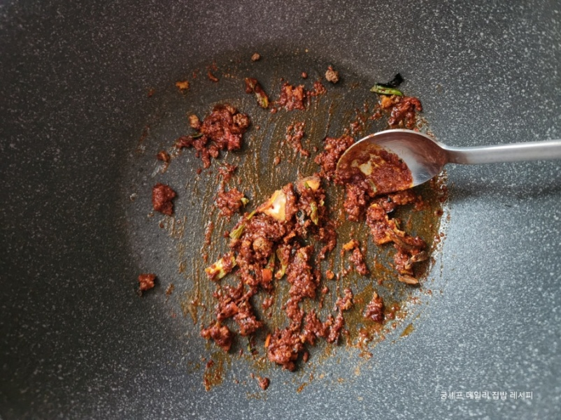
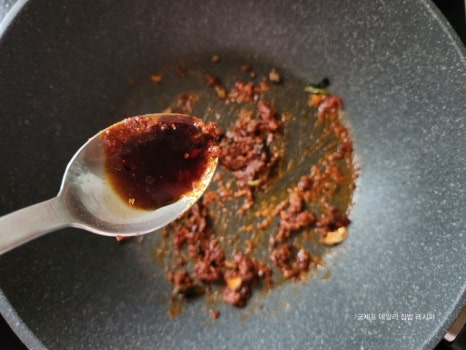
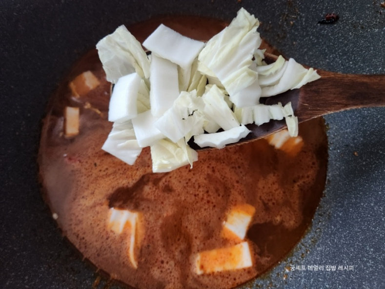
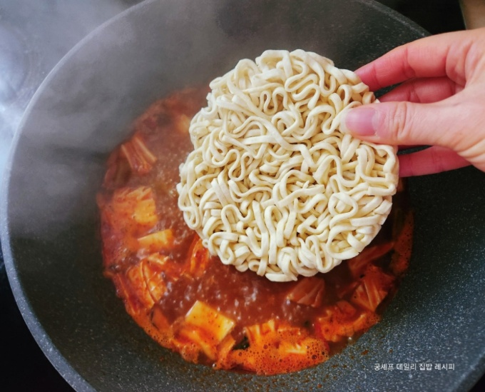

Delicious Korean Ramen Recipe
| Ingredient | Amount | Notes |
|---|---|---|
| Ramen | 1 pack | Any brand |
| Red pepper powder | 1 Tbsp | Adds spiciness |
| Minced garlic | 2/3 Tbsp | Resh is best |
| Cooking Oil | 2 Tbsp | Neutral oil |
| Young napa cabbage | 1 leaf | Optional, can substitute with other vegetables |
| Water | 500 ml | Adjust for soup consistency |
| Dark soy sauce | 1/2 Tbsp | Adds depth of flavor |

4. Slice the cabbage into bite-sized pieces
5. Heat the cooking oil in a pot on low heat, add red pepper powder and the ramen seasoning packet, stir carefully to avoid burning.
6. Mix in the dark soy sauce.
7. Add water and the cabbage, then bring to a boil on high heat.
8. Add the noodles and cook until done.

9. Stir in minced garlic, adjust seasoning if needed, and serve hot.
Tips / Notes
- Optional toppings: green onions, egg, kimchi
- Adjust spiciness by adding ore or less red pepper powder.